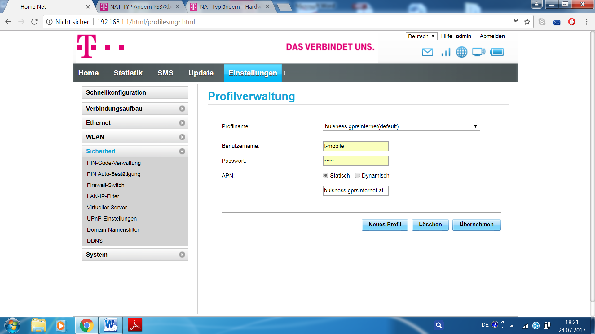

Hi,
schau dir mal den Post hier an:
Es geht hier zwar nicht dediziert um dein Gerät, aber vielleicht helfen dir die Ansätze weiter.
Sonst einfach nochmal melden

Lg
Guten Abend T-Mobile Community,
ich möchte gerne mit meiner Nintendo Switch online spielen, allerdings bekomme ich immer nur Fehlermeldungen. Nun habe ich danach einfach mal gegoogelt und fand heraus, dass ich meinen NAT-Typ ändern müsse. Ich habe das Modem T-Mobile-F2C1D7 und weiß nicht, wo ich den NAT-Typ ändern kann?
Ich hoffe es kann mir jemand helfen.
Mit freundlichen Grüßen
Georg
PS: Euch allen noch eine erholsame Nacht.
Hi,
schau dir mal den Post hier an:
Es geht hier zwar nicht dediziert um dein Gerät, aber vielleicht helfen dir die Ansätze weiter.
Sonst einfach nochmal melden

Lg
Hallo,
vielen Dank für deine Antwort. Diesen Post habe ich auch schon gefunden, bevor ich meine Frage hier gepostet habe. Beim Modem kann ich's zwar auf eine öffentliche IP ändern, jedoch kann ich auf der Konsole das nicht ändern, da es keinen Webbroser gibt, bzw. keine sonstige Einstellung. Deswegen habe ich mir gedacht, ich frage hier mal nach, ob jemand damit schon Erfahrung gemacht hat.
Jedoch trotzdem vielen Dank für deine Hilfe.
Mfg
Hello,
okay also auf Business hast du schon umgestellt
 Das ist mal gut. Dann müsstest du vermutlich nur mehr die Ports freigeben, dann sollte es funktionieren. Hast du das auch schon probiert?
Das ist mal gut. Dann müsstest du vermutlich nur mehr die Ports freigeben, dann sollte es funktionieren. Hast du das auch schon probiert?
Lg
Hallo,
Wie funktioniert die Portfreigabe, bzw. wo mach ich das?
Mfg
Am 5.6.2017 um 00:44 schrieb hallo123:Ich habe das Modem T-Mobile-F2C1D7
Das ist eher eine untypische Bezeichnung. Ich nehme mal an das ist der Modemname für das WLAN. Hast du das Huawei E5170, E5180 oder B315?
Grundsätzlich findest du die Ports bei Sicherheit - Portweiterleitung. Sollte bei allen 3 Geräten so funktionieren.
Hallo.
Ja du hast recht, war der Modem-Name:/. Ich habe das Huawei Lte B593 Modem.
Danke für die Info. Das werd ich mir dann anschauen und hoffe dass ich so die Ports öffnen kann.
Habe es mit der Portfreigabe geschafft, und kann jetzt online spielen. Ich danke euch für eure Hilfe.
Mfg
vor 4 Stunden schrieb hallo123:Habe es mit der Portfreigabe geschafft, und kann jetzt online spielen. Ich danke euch für eure Hilfe.
Mfg
Freut uns, dass wir helfen konnten

Hallo und guten Abend. Ich habe nun das genau selbe Problem wie Hallo123. Nur habe ich noch das Modell Huawei AF22, und weiß nun nicht wie ich die Ports freigeben kann, da unter Sicherheit nirgends Portweiterleitung steht. 
Bearbeitet von Tobistyle1vor 3 Stunden schrieb Tobistyle1:
Die Portweiterleitung findest du unter dem Punkt "Virtueller Server"
Am 24.7.2017 um 21:36 schrieb MarioM:
Die Portweiterleitung findest du unter dem Punkt "Virtueller Server"
ich dürfte das gleiche problem haben. ich habe aber das Huawei HA35 und da ist wieder alles anders.
mein sohn kann nur teilweise mit der switch online spielen. z.b. geht das "splatoon" nicht.
hat wer eine idee?
lg mischa
vor 3 Stunden schrieb mischa6769:
ich dürfte das gleiche problem haben. ich habe aber das Huawei HA35 und da ist wieder alles anders.
mein sohn kann nur teilweise mit der switch online spielen. z.b. geht das "splatoon" nicht.
hat wer eine idee?
lg mischa
Auf business hast du schon umgestellt?
ähm?!
wie und wo. bin der ahnungslose in echt........
Okay sorry, ich dachte du hast den Thread schon ein wenig genauer gelesen.
Ich würde sagen, dass du als erstes den APN auf business umstellst. Das sollte schon mal ein guter Schritt sein. Dann testest du es nochmal

Lg
Bearbeitet von MarioMmein moden/router ist da nicht dabei
ich habe HUAWEI HA 35 - der mit dem rosa menü. da gibt keine interneteinstellung. da sind alle einstellungen gesondert angeführt.
W-lan einstellungen/lan einstellungen usw. - APN hab ich nicht gefunden.
Beim Hybrid Router musst bei der Hotline anrufen, dass sie dich auf eine öffentliche IP umstellt...
Bearbeitet von TomP
Das ist eh schon geschehen, trotzdem fliegt mein sohn bei "splatoon" aus dem w-lan raus. da kommt dann fehlercoder 2618-0203
Die WLAN Verbindung reißt ab?
laut Fehlercode ist es ein Problem mit DNS... Kann man bei der Switch manuell eigene DNS eintragen? Falls ja, würde ich hier mal die von Google versuchen.
Edit: Ist wohl ein bekanntes Problem; der Fehler liegt an den Konsolen. Ein Neustart sollte helfen, wenn dieses Problem auftritt.
Bearbeitet von TomPdanke für die tipps
jetzt hab ich einen access-point dazwischen geschalten. bei splattoon gibts jetzt keine probleme mehr. war wohl die verbindung in den ersten stock........
aber dafür rukeln jetzt andere spiele. aber diese funktionieren mit dem netgear-repeater - mit viel schwächerer verbindung - tadellos. ich kenn mich nimmer aus. drecks technik :-)
aber danke trotzdem
{kind=link}
{kind=link}